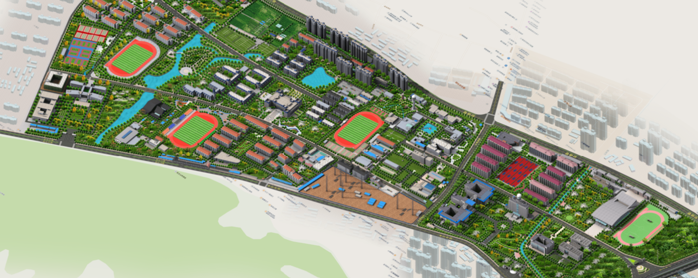

Police
Nationwide emergency number for police assistance.
VerifiedSection 1
The first three days made simple. Numbers to keep close, apps to install, and a few cultural notes that prevent friction.
Nationwide emergency number for police assistance.
VerifiedNationwide medical emergency hotline.
VerifiedNationwide fire emergency hotline.
VerifiedPayments, transit QR, utilities, mini-programs.
Messaging, payments, official accounts.
Navigation, transit, bilingual POI labels.
Ride-hailing with English interface option.
Most daily transactions in Nanjing — buses, canteens, small shops — happen through Alipay or WeChat Pay QR codes. Carrying small cash is still wise, but linking a card to one of these apps is the single most useful onboarding step.
Section 2
Where to find a book, a meal, a clinic, and the gate. A working map of an academic day at NUIST.

Section 3
A short walk through the layers of the city — Ming walls, Republican avenues, modern districts.
Section 4
Two half-day routes designed for first-month arrivals. Practical timing, transport, and one cultural prompt per stop.
Nanjing Museum → Xuanwu Lake
Zifeng Tower → Nanjing Drum Tower
Section 5
A short, practical Chinese phrasebook for the first weeks on the ground.